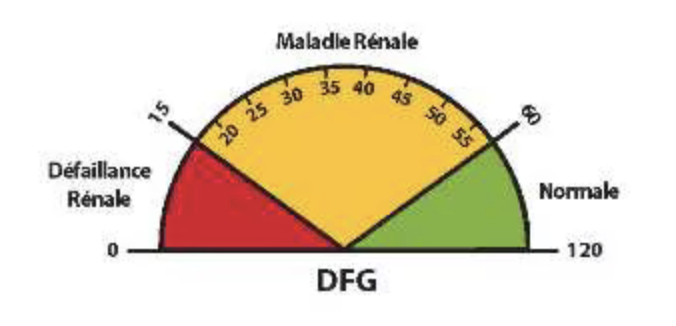

Jeu de Liaison
Relie chaque image à sa bonne définition en cliquant sur les éléments.
Images





Définitions
Ce test permet de mesurer la créatinine dans le sang.
Un suivi médical régulier est nécessaire pour prévenir l’aggravation de l’insuffisance rénale.
Les reins filtrent le sang pour éliminer les toxines.
L’hypertension artérielle est un facteur de risque pour l’insuffisance rénale.
Le rein produit de l’EPO, une hormone qui stimule la production de globules rouges.
La bandelette urinaire peut révéler des anomalies dans les fonctions rénales.
Le DFG est un indicateur clé de la fonction rénale.
Un taux élevé de créatinine peut signaler un dysfonctionnement rénal.
Un rein endommagé filtre moins efficacement le sang.
L’insuffisance rénale chronique évolue lentement.